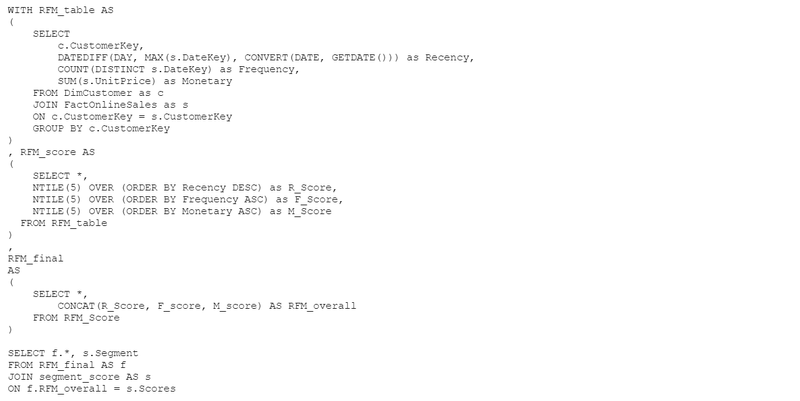
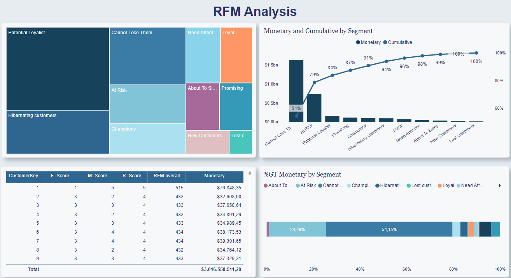
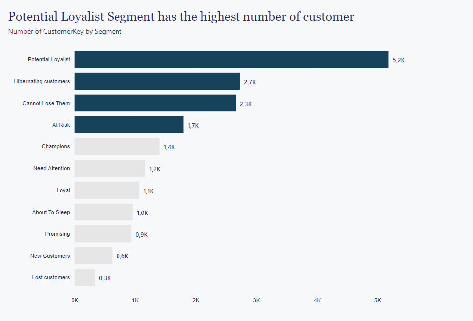
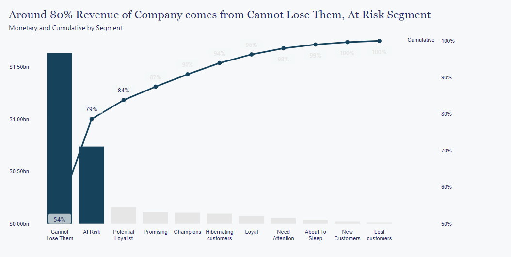
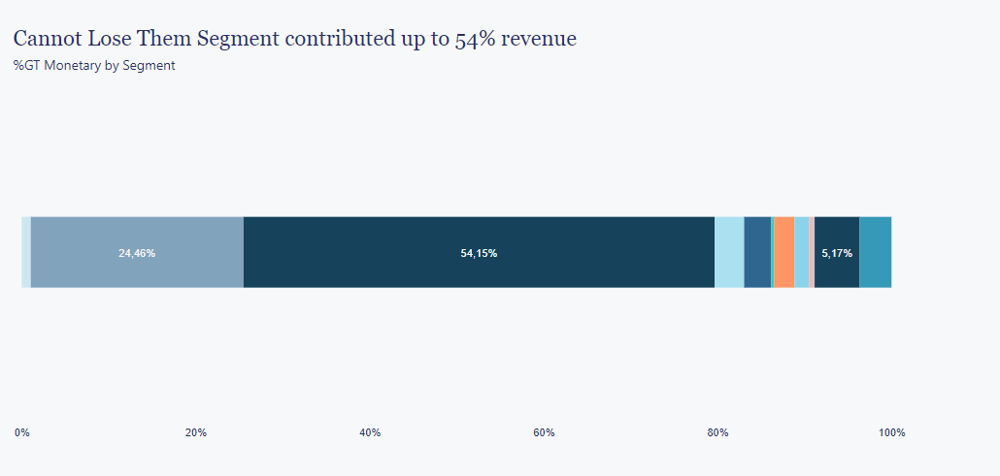

RFM Analysis
Applied RFM Analysis using SQL and Power BI for Customer Segmentation.
Business Problem
The business problem addressed in this RFM analysis project is to understand and segment the customers of a retail company based on their purchasing behavior. By conducting RFM analysis, the company aims to gain insights into customer segments, identify high-value customers, and tailor marketing strategies to enhance customer retention and profitability.
Objective
The main objective of this RFM analysis project is to segment the retail company's customer base into distinct groups based on their purchasing behavior:
- Recency (R): How recently a customer made a purchase.
- Frequency (F): How frequently a customer makes purchases.
- Monetary Value (M): The monetary value of a customer's purchases.
The analysis is intended to help the retail company better understand its customer segments and make data-driven decisions to optimize marketing efforts, customer engagement, and overall business performance.
Implementation
1. Calculate RFM score using SQL

2. Visualization

Findings
Customer Segments and Revenue Distribution: The "Potential Loyalist" segment, with the largest customer base, offers promising potential for long-term loyalty and repeat business. Meanwhile, the "Cannot Lose Them" segment, though smaller in size, is the most valuable, contributing 54% of the company's total revenue. Additionally, the "At Risk" segment, consisting of customers showing signs of disengagement, accounted for a significant 24.46% of the revenue.

Importance of Customer Retention: The "Cannot Lose Them" and "At Risk" segments together represent 78.46% of the company's total revenue. This highlights the critical importance of customer retention strategies, both for maintaining high-value customers and re-engaging those at risk of churn. Investing in personalized retention efforts can lead to substantial revenue preservation and growth opportunities.

Opportunity for Growth: The "At Risk" segment presents an opportunity for revenue recovery. Implementing targeted re-engagement and customer retention strategies can potentially prevent these customers from transitioning into the "Lost Customer" category and unlock additional revenue potential.

Cost-Effectiveness of Customer Retention: Retaining existing customers, particularly those in the "At Risk" segment, can be more cost-effective than acquiring entirely new customers. By prioritizing customer retention, the company can maximize the lifetime value of existing customers and improve overall profitability.
Long-Term Customer Value: The analysis underscores the significance of customer lifetime value. The "Potential Loyalist" segment represents an opportunity for ongoing revenue generation, while re-engaging and nurturing the "At Risk" segment can potentially transform them into loyal and high-value customers.
Recommendations
- Segment-Specific Strategies: Tailor marketing and retention strategies for each customer segment, with a particular focus on the "Cannot Lose Them" and "At Risk" segments, to maximize revenue from these valuable groups.
- Customer Retention Initiatives: Implement targeted and personalized retention campaigns for the "At Risk" segment to re-engage customers and prevent churn.
- Loyalty Programs: Establish loyalty programs to incentivize and reward repeat purchases, especially for customers in the "Potential Loyalist" segment.